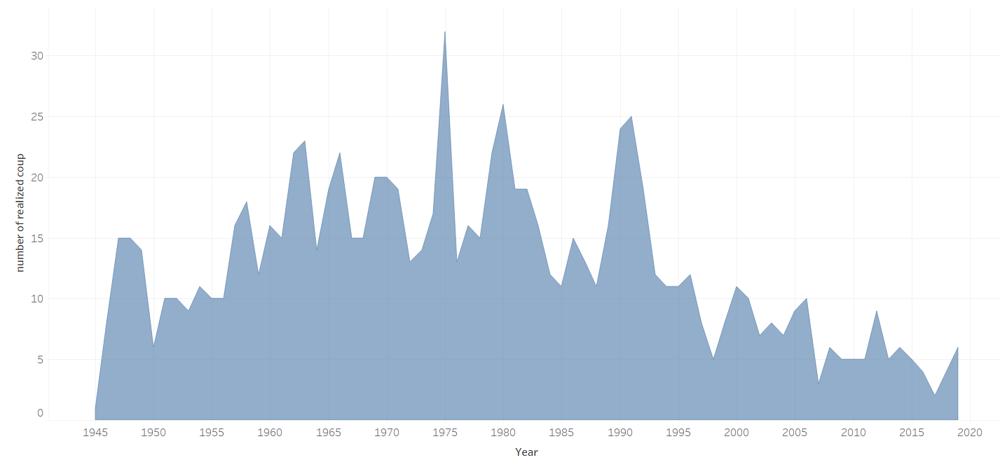

Database
The Coup D’état Project dataset, compiled by the Cline Center for Advanced Social Research, provides a detailed and comprehensive record of post-World War II coup events.
This dataset is crucial for understanding irregular transfers of political power, which can have significant and long-lasting impacts on a nation's political and social well-being.
Why This Dataset matters: Coups d’état are rare but transformative events. They represent pivotal moments in a country’s history and can shape governance, stability, and development.
Despite their importance, only a few datasets exist to systematically study these events. The Coup D’état Project seeks to fill this gap by offering researchers a more comprehensive and reliable resource.
When visualizing the dataset in Excel, it was immediately apparent that the data was well-organized and cleaned. The structure was logical, with clear categorization of events, well-defined variables, and consistent date formats. This organized setup facilitated straightforward analysis of the dataset, enabling the drawing of meaningful conclusions.
Source of the database : Peyton, Buddy, Joseph Bajjalieh, Dan Shalmon, Michael Martin, and Jonathan Bonaguro. 2020. Cline Center Coup D’état Project Dataset. Cline Center for Advanced Social Research. V.2.0.0. November 16. University of Illinois Urbana-Champaign. doi: 10.13012/B2IDB-9651987_V1
What are coups d'Etat ?
A coup d'état is a sudden and illegal seizure of power from a government, typically carried out by a small group such as the military, political elites, or state insiders.
Unlike revolutions or mass uprisings, coups do not rely on widespread public participation but instead focus on quickly taking control of key state institutions, such as the government, military, or media.
Coups are often motivated by political instability, economic crises, corruption, or ideological conflicts. They are most common in states with weak institutions, divided societies, or histories of authoritarian rule. While some coups aim to restore order or address grievances, they often lead to prolonged instability, weakened democracy, and human rights abuses.
Throughout history, coups have shaped global politics. Examples include the 1973 military coup in Chile led by Augusto Pinochet, the 1989 coup in Sudan that brought Omar al-Bashir to power, and the 2013 military ousting of Mohamed Morsi in Egypt.
Though they can result in immediate regime change, their long-term consequences often involve cycles of unrest, economic disruption, and damaged political institutions.
Map
Realized Coups by country
o The higher frequency of realized coups in Africa and Latin America compared to Europe or North America can be attributed to historical patterns of political instability, weaker democratic institutions, and a higher likelihood of military involvement in governance.
For example, the Cold War intensified external intervention in Latin America, where the military often acted as a political force. Conversely, in regions with strong democratic traditions, such as Western Europe, coups are rare and less likely to succeed due to institutional checks on power and lower military involvement in politics.
o Both Africa and Latin America have traditionally experienced weaker democratic institutions, which makes it easier for political power to be wrested away through undemocratic means like coups. The lack of a solid democratic tradition means that there are fewer institutional checks and balances to prevent such power grabs.
In contrast, Western Europe and North America have developed strong democratic norms and institutions over centuries, which act as effective barriers against military coups. Political power is more likely to be transferred through elections and peaceful means, with the military having a limited role in political affairs.
o The military’s role in politics is a significant factor contributing to the higher frequency of realized coups in Africa and Latin America. In these regions, the military has often played a dual role as both an instrument of state power and a political force.
In Africa, military coups were frequently used as a response to perceived corruption or inefficacy of civilian governments. In Latin America, the military often justified its intervention as necessary to restore order and stability in the face of political chaos or communist threats during the Cold War era.
In Europe and North America, the military’s involvement in politics is strictly limited by constitutional frameworks and societal norms that emphasize civilian control of the military.
As a result, the likelihood of realized coups remains exceedingly low in these regions.
Graphic
Number of realized coups by year
This graph displays the number of realized coups d'état per year from the mid-1940s to around 2020.
o Post-WWII Surge (1945-1960) : After World War II, many former colonies in Africa, Asia, and the Middle East gained independence. The newly formed states often faced political instability, weak institutions, and military influence, leading to a rise in coup attempts.
o The graph peaks during the 1960s and 1970s, marking a period of high political unrest, especially in developing countries. In Africa, many states experienced frequent military takeovers after decolonization (e.g., coups in Ghana, Nigeria, and Congo). In Latin America, coups became common as military juntas overthrew elected governments, often influenced by Cold War dynamics. Examples include the Brazilian coup (1964) and Chile (1973) under Pinochet.
o The number of coups starts to decline in the 1980s, possibly due to the gradual democratization of many countries and reduced Cold War proxy conflicts.
o There is a notable resurgence in the early 1990s, particularly in Africa, due to lingering political instability and economic crises.
o The early 2000s see a significant drop in the number of realized coups, coinciding with stronger international norms against coups, regional organizations' interventions (like the African Union), and the spread of democratization.
About the process
1) Using the dataset, I created a map and a graphic to properly visualize my data.
2) Creation of a Web site using Visio studio Code
3) Adding style using CSS language and Java script
4) Collect contextual information about the history of Coup d’Etats to better interpret my data
Sources
o David Sebastiani - DH @PS_UniRoma3 – Digital Humanities @ Political Sciences - Roma Tre. https://digitalhumanities.site/
o Peyton, Buddy, et al. Cline Center Coup D’état Project Dataset. 2020. databank.illinois.edu, https://doi.org/10.13012/B2IDB-9651987_V1
o Coup d’etat | Definition, Examples, & Facts | Britannica. https://www.britannica.com/topic/coup-detat. Consulted on December 14th 2024.
o Williamson, Megan Duzor and Brian. By The Numbers: Coups in Africa. https://projects.voanews.com/african-coups/. Consulted on December 14th 2024.
o Henderson, Ronald. « How Did the Cold War Affect Latin America? » Military Modelling, 2 octobre 2024, https://www.militarymodelling.com/blog/how-did-the-cold-war-affect-latin-america/.
o « Three Factors Are behind the Recent Wave of Coups in Africa ». Africa at LSE, 20 août 2024, https://blogs.lse.ac.uk/africaatlse/2024/08/20/three-factors-are-behind-the-recent-wave-of-coups-in-africa/.